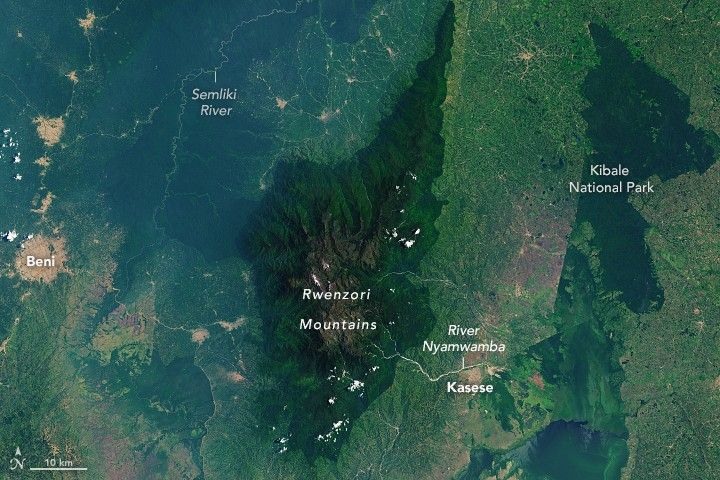

Mountains of the Moon
The Rwenzori Mountains stand more than 5,000 meters (16,000 feet) above sea level in eastern Africa. The prominence is visible for miles around and even from orbit, provided it is not hidden by clouds and mist.
The OLI‑2 (Operational Land Imager‑2) on Landsat 9 captured this image on March 13, 2024. This rare, nearly cloud‑free scene is one of the clearest natural‑color views of the mountains acquired by Landsat in recent years.
The mountains, which straddle the border of Uganda and the Democratic Republic of the Congo (DRC), lie along the western arm of the East African Rift Valley. In this area, tectonic plates are pulling apart, causing some blocks of land to fall and others, including the Rwenzori, to rise. Unlike Kilimanjaro and Mount Kenya to the east, the Rwenzori Mountains are not volcanic.
The Rwenzori became a national park in 1991 and were then recognized as a UNESCO World Heritage Site in 1994. The mountain slopes contain plants found only in the area, such as giant lobelias and groundsels. The forests are also home to animal species such as the African forest elephant, eastern chimpanzee, and Rwenzori duikers.
The area is an important water catchment. In the 2nd century CE, the ancient astronomer and geographer Ptolemy called the peaks the “Mountains of the Moon,” as they were thought to be the source of the Nile. Though the Nile is actually fed by a complex system of rivers and water bodies, water from the Rwenzori Mountains is an important resource for people in Uganda and the DRC. Mountain streams feed rivers such as the Semliki, which ultimately flows into Lake Albert, and the Nyamwamba, which flows into Lake George.:contentReference[oaicite:0]{index=0}
A detailed view of the Rwenzori Mountains, centered in the scene, shows the range’s three highest mountains. The peaks are topped with white, much of which is snow. The Rwenzori Mountains, along with Kilimanjaro and Mount Kenya east of this image, contain the bulk of East Africa’s tropical glaciers. All of them are in strong decline.:contentReference[oaicite:1]{index=1}
The white cap atop Mount Stanley, visible in the detailed image above, is a combination of glacial ice and snow. Researchers found that the surface area of the Stanley Plateau glacier decreased by about 29.5 percent between 2020 and 2024. They also confirmed that Mount Speke, toward the northeast, no longer supports a glacier. As glaciers shrink, they can become too small to flow downslope under their own weight and transition into stagnant ice fields.:contentReference[oaicite:2]{index=2}
Expeditions led by glaciologists and climate researchers in collaboration with organizations like UNESCO and the Uganda Wildlife Authority confirm that the glaciers on Mount Speke and Mount Baker have now disappeared entirely, while the remaining ice on Mount Stanley is rapidly retreating and fragmenting. Scientists warn that this glacier loss is occurring at an accelerating rate and may lead to total disappearance within a few decades.:contentReference[oaicite:3]{index=3}
Cold, snowy climates found at high elevations have allowed glaciers to exist in the tropics—the region of Earth straddling the equator between latitudes of about 30° N and 30° S—but even high elevation cannot indefinitely sustain glaciers amid warming temperatures. A similar scenario has played out elsewhere in Africa and across the tropics. Glaciers on Kilimanjaro in Tanzania, Puncak Jaya in Indonesia, and the Sierra Nevada de Mérida in Venezuela have also become stagnant ice fields.:contentReference[oaicite:4]{index=4}